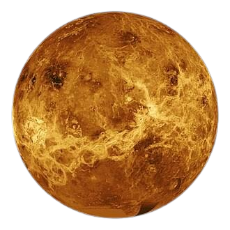

Diameter
12,104 km
Venus is only slightly smaller than Earth.
Hidden beneath thick yellowish clouds, Venus is a world of crushing atmospheric pressure and extreme heat. Although similar to Earth in size, its surface conditions are dramatically different, making it one of the most extreme environments in our Solar System.

Venus is the second planet from the Sun and is often called Earth's twin because of their similar sizes, masses and rocky compositions.
However, Venus has a very different environment. Its atmosphere is extremely thick and consists mainly of carbon dioxide, with clouds containing sulfuric acid.
This atmosphere traps heat through an intense greenhouse effect, producing surface temperatures hot enough to melt lead. Venus is therefore the hottest planet in the Solar System, even though Mercury is closer to the Sun.

Venus is covered by thick clouds that hide most of its rocky surface from visible light.
Explore the physical and orbital characteristics that make Venus one of the most unusual planets.
12,104 km
Venus is only slightly smaller than Earth.
108.2 million km
Venus is the second planet from the Sun.
225 Earth days
One Venusian year is shorter than
one Earth year.
243 Earth days
Venus rotates extremely slowly
and in a retrograde direction.
About 465°C
Its surface is hot enough to melt lead.
Zero
Venus has no known natural satellites
or ring system.
Venus is a terrestrial planet with a rocky surface and a metallic interior, broadly similar in structure to Earth.
Although Venus is covered by dense clouds, its interior is believed to contain three main layers: a crust, a mantle and a core.
Its surface is dominated by volcanic plains, mountains and large geological formations. Scientists continue to investigate whether volcanic activity is still occurring.
Simplified illustration of Venus's internal layers. Not to scale.
Venus has one of the slowest rotations of all the planets. It takes approximately 243 Earth days to complete one rotation around its axis, while it takes only 225 Earth days to complete one orbit around the Sun.
Venus also rotates in the opposite direction to most planets. This is known as retrograde rotation. As a result, the Sun would appear to rise in the west and set in the east.
Studying Venus is challenging because its extreme temperature and atmospheric pressure make surface exploration difficult.
NASA's Magellan spacecraft arrived at Venus in August 1990. It used radar to map much of the planet's surface through its thick cloud cover.
Its observations revealed extensive volcanic plains, mountains, impact craters and other geological features, greatly improving our understanding of Venus.